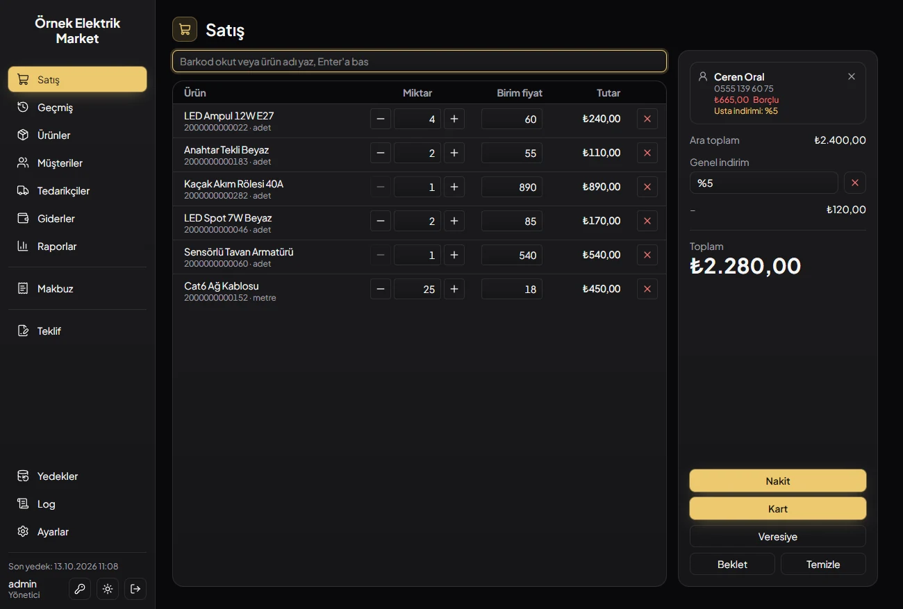
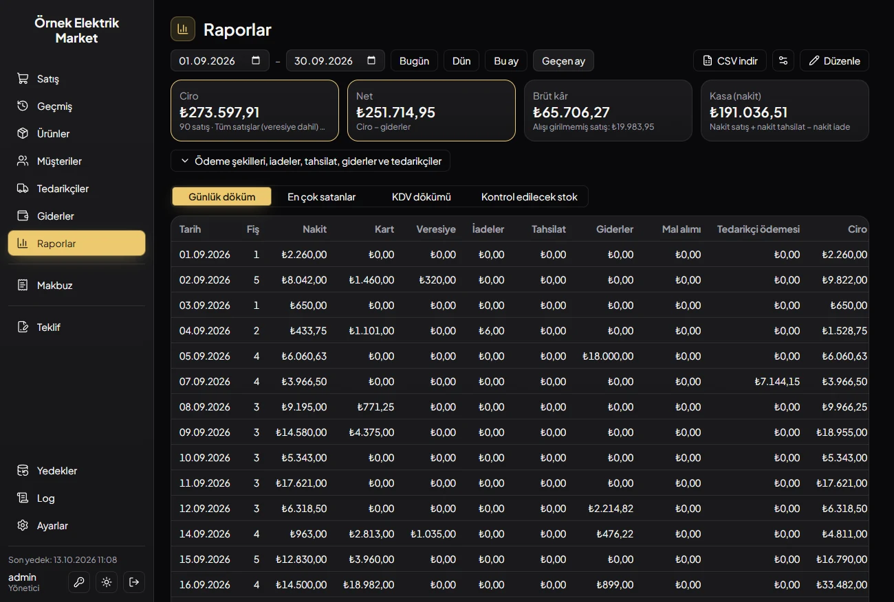
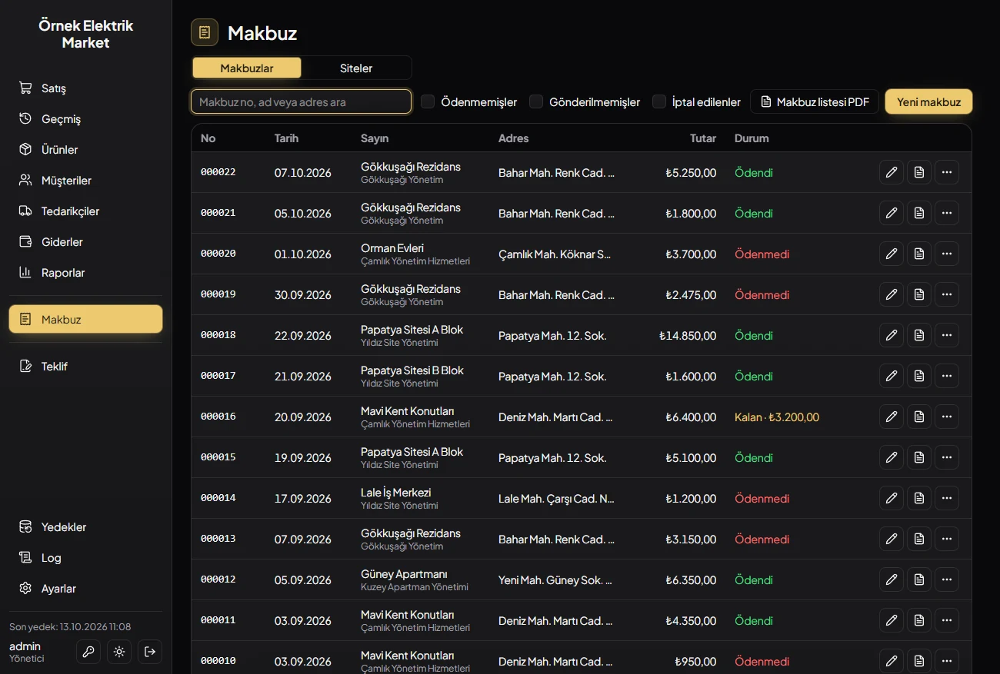

Raflıyo: a shop app sold by subscription
From two apps for one shop to a product other shops can buy.
Raflıyo is the most important thing I have built, and the first one that is a product rather than a project. It is a Windows desktop app for small shops that sell products, like electrical and hardware shops: the till with a barcode scanner, stock, customers who buy on credit, suppliers, expenses, reports, service receipts, quotes and shelf labels. A shop pays for it monthly or yearly, installs it from a single setup file, and runs it on its own PCs with its data on its own disk.
It started where my two Python desktop apps for an electrical shop in Çanakkale left off. One kept the ledger, the other made service receipts, and the shop used both every day. They worked, but they were two programs, on one PC each, built for one shop's name and letterhead. Raflıyo replaces both with one app that several PCs share, and nothing in it belongs to one shop: the name, logos, letterhead, document titles and texts are settings. That shop was the first install, on 12 October 2026. It is a client project turned into something I can sell to the next shop and the one after it.
What a shop does with it
The home screen is the basket. A barcode scanner types like a keyboard, so the field adds the product 500 ms after the typing stops, and the same barcode twice is one more of it. Products are sold by the piece, pack or box, or by metre, kilo or litre to three decimals. A sale is paid in cash, by card or on credit, and credit needs a customer and stays under their limit. A basket can be parked while the next customer is served.

Around the till sit the rest of a shop's day: customers with their account statement as a PDF, suppliers with purchases that add stock, expenses, an end-of-day closing, a list of what to reorder grouped by the last supplier, bulk price changes, product import from Excel, and shelf labels with EAN-13 or Code 128 barcodes on a 3 × 8 sheet. Service receipts and quotes are PDFs on the shop's own letterhead. Reports show turnover, net, drawer cash, gross profit from purchase prices, VAT per rate and the best sellers, for any date range.

One database, several PCs
A shop usually has a till PC and a PC in the back. The installer asks one question on the first install: is this PC the shop's server? Yes downloads a trimmed PostgreSQL 18 from my server, checks its SHA-256, installs it as a Windows service, creates the database and opens it to the local network. Every other PC installs the same file, answers no and connects to it. When something changes, a database trigger sends a notification and every open screen on every PC reloads, so a sale at the till shows up in the back office report without a refresh button.
I picked PostgreSQL over SQLite, which the Python apps used, for that reason: several PCs writing at once is what it is built for. The cost is a real database server on a shop PC, so the installer does all of it, and uninstalling on the server PC asks whether the data goes too. The default is to keep it, and the next install finds it and connects without asking.
Money is a whole number
Every amount is an integer number of kuruş, the Turkish cent, from the database through Rust to the screen; the names end in _cents so nobody can forget. The basket math rounds half up in one place. The screen shows a total, but the Rust side computes it again from the lines and refuses the sale when the two differ, so a stale screen cannot sell at an old price. Each sale, payment, purchase, return and void is one transaction that moves the stock, the customer's ledger and the document number together, and numbers are never reused, even for voided rows.
A test pins the two figures a shop owner checks every evening: the day's total is the active sales minus returns, and the drawer is cash sales plus cash payments minus cash refunds. Changes to money are written to the activity log inside the same transaction, so a crash cannot leave a sale without its log row.
The till and the owner
The first versions had user accounts and a login screen. In the shop that turned out to be friction at the till and no real protection, so 0.1.17 has two modes instead. The app opens in till mode with no password. The owner switches to admin mode with their password, and switches back without losing the basket. The owner sets what the till may do, and two limits: selling below the list price and giving more discount than the customer already gets. Past either one, the pay window asks for the admin password and the sale records who approved it.
A forgotten admin password is reset with the shop's license key, which only the owner has. The migration that moved live data from many accounts to two was dry-run in a rolled-back transaction on the dev database, with several admins and with no cashier at all, before it shipped.
A license that never locks the data
Selling software means a license, and a license that can lock a shop out of its own sales records is a liability. The license server is a small Rust service (axum and SQLite) on my VPS. It signs a token with Ed25519 that names the shop and the expiry; the app checks the signature with the public key it ships with, stores the token in the shop database so every PC shares it, and refreshes it daily. Without an answer from the server the app keeps working for 7 days, and after the expiry for 3 more. After that the database connection becomes read-only: the shop can still see every sale, customer and receipt, print and export, but not add new ones. Nothing is deleted or encrypted.
A PC clock set back does not extend a license: the app takes the latest of the PC clock, the last time it saw the server and the token's issue time. A key is bound to one install, and moving the shop to a new PC carries the binding inside the backup, so a restore keeps the license working without a call to me.
Updates every shop gets
The app checks for an update at every start, before it connects to the database, so a new version runs its database migrations once on a fresh start rather than in the middle of a sale. Updates are signed, and the server only offers them to a valid license. One script builds the installer, signs it, uploads it and moves the "latest" link. That is what made 17 releases in four days possible.
Backups the owner never thinks about
The server PC runs pg_dump at start and every four hours and keeps the last 100. Restoring is a button: it takes a fresh backup first, then restores all or nothing. I tested that the way it would fail in a shop: a backup restored into a scratch database gave the same rows, tables that were not in the backup were removed, and a broken file changed nothing.
Receipts, and the shop's old ones
Service receipts were the reason the first shop needed software at all. In Raflıyo a receipt belongs to a site, a building where the work was done, and is paid by a customer, often the building's management company. They are separate things: a management pays receipt by receipt, so its unpaid receipts show next to its account balance instead of inside it. The receipt list marks paid ones green, part-paid ones amber with what is left, and unpaid ones red, and a list of any management's receipts is one PDF.

The shop had 46 receipts in my old Python app, so I wrote a one-off importer, packed as a single exe for the shop PC. It keeps the old receipt numbers, merges the same management typed three different ways into one customer, and writes everything in one transaction. It refuses to run if any of those numbers already exist, so running it twice cannot duplicate anything.
Receipt PDFs used to fit one shop's letterhead exactly. Now the places where the text goes are settings with a preview, and their defaults reproduce the first shop's layout; I checked that the output is identical before switching.
Sending a receipt on WhatsApp
Shops in Turkey send receipts on WhatsApp, not by email. The app hands the PDF to a Chrome extension of mine through a small local server on 127.0.0.1: the extension opens the customer's chat in the shop's own WhatsApp Web, attaches the PDF and presses send, then reports back. Each job's steps run once, so reloading the tab does not send it again. The extension asks for access only to that local address and to WhatsApp Web, and is in review on the Chrome Web Store.
The shop's website
The first shop has a website with its catalogue, and keeping prices in two places is how they go wrong. The server PC pushes changed products to the website every minute. The shop chooses what goes (price, stock, category, brand), and anything turned off is left out of the request, so the website keeps its own value. Another shop's website can receive the same push: the settings page shows the request it will get, with a live sample.
Selling it
rafliyo.com is the sales site: one Turkish page with the features, the price, questions and a contact form, plus the legal pages. The price is 399 TL a month or 3,990 TL a year.
The demo on the site is the app itself. Its React screens are built a second time with the desktop calls swapped out: reads come from a recording of a made-up demo database, the basket works in memory, and anything that would change data or write a file says it is a demo. A visitor clicks through the real interface instead of looking at screenshots. The site sets no cookies; visits are counted from the web server's log with anonymised addresses.
Checked
| check | result |
|---|---|
| Rust tests at 0.1.17 (database tests run on a dev database and roll back) | 77 passed, 4 ignored (sample PDFs) |
| license server tests | 12 passed |
| fresh install on a clean Windows VM: server setup, database, first run, uninstall | passed |
| backup restored into a scratch database, and a broken backup | same rows; nothing changed |
| 0.1.17 offered to a 0.1.16 install with a valid license | passed |
The features of each release were also driven in the running app through Chrome's debugging protocol, which Windows' WebView2 exposes, on made-up data that was removed afterwards.
Limits
Backups stay on the shop's own disk unless the backup folder points at a cloud folder. And the app is Windows only, Turkish only, and so far in one shop: the next step is a free pilot in one or two more.